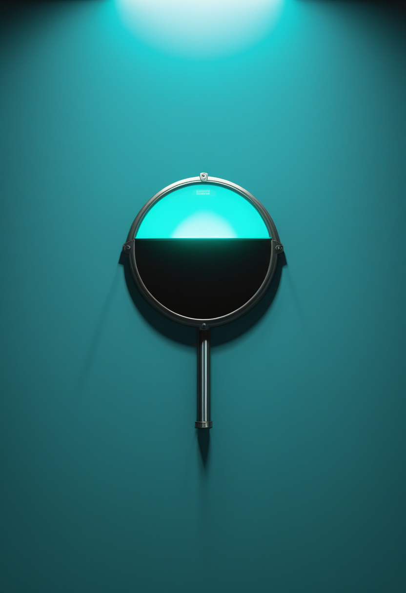
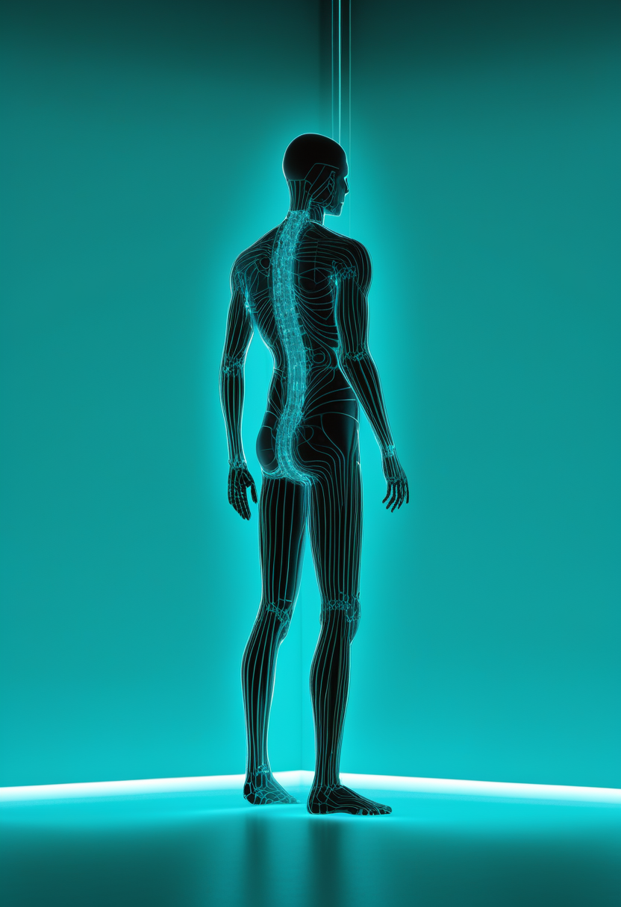
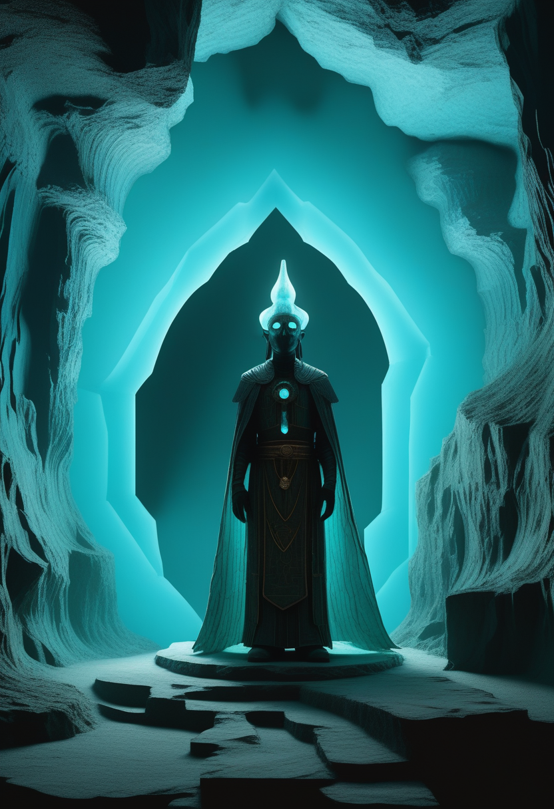

月曜日の便り。米CDCの集計(10/29時点)で、米国の麻疹は4,852例に達し、1週間で264例増と勢いが強まった。汎米保健機構(PAHO)は11月10〜13日に米国の『麻疹排除』認定の見直しを行うと報じられ、取り消しがほぼ確実との見方も出ている。基盤の章ではこれに加え、カリフォルニア州でmpoxクレードIが4例確認されたことと、アフリカCDCのカセヤ所長が出身国カナダへエボラ支援の拡大を個人的に呼びかけたことを届ける。命の章ではScholar Rockの筋肉標的薬Isembyldが11月10日の決算で初の売上を示す見込みであることとFDAの骨折リスク注意を、自由の章ではNeuralinkのTelepathy・Blindsightをめぐる続報とFDA指定の限界を伝える。畏敬の章ではJWSTが溶岩惑星TOI-561 bに光を跳ね返す雲の可能性を見つけたことと史上最遠のリング銀河、原因不明の失神に関する大規模試験、CERNの素粒子測定を。美の章ではAIエージェントが動かす人間のデジタルツインの医療総説と、中国アルタイ山脈の洞窟壁画が青銅器時代からチベット仏教期まで積み重なっていたことを取り上げる。
米CDCの集計(10/29時点)で、2026年の麻疹は4,852例に達した。前回(10/22時点、4,588例)から1週間で264例増え、前週の増加(178例)より勢いが強まった。入院は511例(約11%)、CDCが確認した死亡は3例。患者の96%(4,666例)は集団発生に関連している。汎米保健機構(PAHO)は11/10〜13に米国の『麻疹排除』認定を見直す予定と報じられ、専門家の間では取り消しはほぼ確実との見方が出ている(決定はまだ)。前号まで3日続けてエボラを一本に選んだが、今号は米国の麻疹で週ごとの増加が再び加速し、国際的な認定の見直しという新しい局面に入った点を重く見た。
Scholar Rockの抗体薬Isembyld(アピテグロマブ)は9月11日、SMN2を標的とする既存治療を受けている2歳以上の小児・成人のSMAに対し、筋肉を狙う初の治療薬としてFDAの承認を得た。11月10日予定の第3四半期決算では、発売からおよそ3週間分の売上が初めて示される見込みだと報じられている。FDAは添付文書で、重い骨折を含む骨折リスクの増加を重要な安全性の懸念として挙げている。欧州では8月に取り下げた申請を10月8日にEMAへ再提出済みで、CHMP意見は2027年前半を見込む。
筋肉を狙う新しいクラスの薬が、承認から『実際にどれだけ使われているか』を数字で示す番を迎える。期待と並んで、骨折という具体的なリスクをどう管理するかが次の焦点になる。
イーロン・マスク氏の10月30日の投稿を受け、各メディアが10月末、最初の製品『Telepathy』と視覚回復をめざす第2の製品『Blindsight』を詳しく紹介した。ALSの治験参加者が脳から生成した文章でコーヒーを注文した例も示され、考えるだけでの意思伝達が日常の場面に近づいていることをうかがわせた。一方Benzingaは、FDAの『ブレークスルー機器』指定は研究・臨床試験を後押しするものであり、商用利用を認める承認ではないと注意を促した。Blindsightは技術面では準備済みとされるが、規制当局の承認はまだ先になる。いずれも企業側の発信で、査読済みデータは示されていない。
脳信号でコーヒーを注文する場面は、BCIが『実験室の実演』から『生活の一場面』に近づいたことを印象づける。ただしFDAの指定が意味するものと商用化までの距離は、期待と規制のあいだでまだ開いたままだ。

米CDCは10月30日、10月29日時点の麻疹確定例が4,852例に達したと発表した。10月22日時点の4,588例から1週間で264例増え、前週の178例増より勢いが強まった。入院は511例(約11%)、CDC確認の死亡は3例だが、ペンシルベニア州は同州独自の集計で流行関連死を5例としており、数字は一致していない。患者の96%(4,666例)はワクチン未接種か接種歴不明で、集団発生に関連する。汎米保健機構(PAHO)は11月10〜13日に米国の『麻疹排除』認定の見直しを行うと報じられ、専門家の間では取り消しがほぼ確実との見方が出ている(決定はまだ)。排除認定の条件は『12か月以上途切れずに国内流行が続いていないこと』で、米国では2025年1月から流行が続いている。
カリフォルニア州スタニスラウス郡は10月29日、直近1週間ほどでmpox4例を確認したと発表した。州保健局が2例をクレードIと確定し、残る2例は確認検査中。4人のうち3人には海外渡航歴がなく、国内で感染が広がっている可能性がある。郡は『2026年8月以降、渡航歴のないクレードIの例が増えている』としつつ、一般の人へのリスクは低いとしている。感染経路や4例のつながりは公表されていない。
アフリカCDCのジャン・カセヤ事務局長は10月31日、自身のX投稿で、出身国でもあるカナダに向けてコンゴ民主共和国のエボラ対応への支援拡大を直接呼びかけた。カセヤ氏はコンゴ出身で2013年からカナダに住んでおり、流行のため数か月家族に会えていないと明かした。『今エボラが広がっている場所で食い止め、ゼロにする力を貸してほしい』と述べ、カナダへの感染リスクは低いままだとしつつ、軽視しないよう市民に求めた。カナダによる初期資金提供やワクチン試験への協力、ウイルスの配列解析でのコンゴの研究者との連携に謝意を示した。確定例は1万例超、死亡は5,000人前後とされるが、集計時点や出典によって数字に差があり、一次情報での確認はまだ済んでいない。
麻疹は増加のペースそのものが強まり、国際的な『排除国』の地位という新しい局面に入った。mpoxは渡航歴のない例が増え、エボラは数字を追う段階から支援の呼びかけへと焦点が移っている。ワクチンで防げる病気への対応が、改めて問われている。
JWSTで溶岩惑星TOI-561 bを37時間観測し、惑星がほぼ4周する様子をとらえた結果、恒星光の約75%を反射する明るい大気をもつ可能性が示された(Astronomical Journal、10月下旬に報道)。二酸化ケイ素やケイ酸マグネシウムの雲が昼側にできる『日焼け止め』のような働きが考えられているが、大気中の特定の気体はまだ検出されておらず、雲も推定の段階。JWSTは別の観測で、ビッグバン後約21億年にできた史上最も遠いリング銀河GS18660も確認しており(A&A誌、9月)、銀河どうしの正面衝突でできた可能性があるという。
英国45病院によるASPIRED試験(NEJM10月29日号、8月30日オンライン公開)は、救急で原因がわからなかった失神の成人2,233人を、14日間の携帯型心電図モニターと通常診療に分けて比較した。1年後の失神回数は平均1.37回と1.58回で有意差はなかった(発生率比0.89、P=0.42)。一方モニター群では重要な不整脈の検出が2倍以上になり、早期発見が的を絞った治療につながった。『診断が改善』という見出しは副次的な結果に基づく点に注意が必要。
CERNのATLAS実験は10月20日、トップクォークとZボソンが一緒に生まれる『tZq生成』について、生成粒子の運動量や方向ごとの分布(微分断面積)を初めて測定したと報告した。標準模型の予測を細かく確かめ、トップクォークとZボソンの結びつきに未知の物理が隠れていないかを調べる手がかりになる。10月1日にはZボソン2個がともに『縦偏極』した現象の初観測も報告しており、ヒッグス機構の検証が進んでいる。
惑星の雲、失神の検査、素粒子の結びつき ― スケールはまるで違うが、どれも『見えているものをどれだけ精密に測れるか』を競う仕事だ。

Springerの学術誌に10月12日、AIエージェントで動く『人間のデジタルツイン』を個別化医療に使う研究を整理した総説が出た。さまざまな健康データ、大規模な基盤モデル、説明可能なAI、診療の意思決定支援をつなぐ共通の枠組みを提案している。ただし関連の総説では、医療分野の研究の多くはまだ構想やシミュレーションの段階で、厳密な定義を満たす『デジタルツイン』は一部にとどまると指摘されている。

中国新疆ウイグル自治区のアルタイ山脈、富蘊県から約70km離れたタンバレタシの2つの洞窟で、ハイパースペクトルイメージングによる調査が行われた(npj Heritage Science、10月11日)。C1洞窟に19、C2洞窟に51の図像が確認され、三つ目の人型の顔や角のある人型像など青銅器時代(チェムルチェク文化と関連する可能性)の図像に、元朝期(1271〜1368年)のチベット仏教の金剛杵やチベット文字の銘文が重なっていた。洞窟は異なる時代の複数の共同体によって繰り返し利用され、世代を超えて図像が積み重なってきたとみられる。
医療の『デジタルの写し』は構想から実装への課題を積み重ね、アルタイの洞窟壁画は青銅器時代からチベット仏教期まで異なる時代の図像を積み重ねてきた。どちらも、同じ場所に幾重にも積もった時間をどう読み解くかという仕事だ。
月曜日の便り。米CDCの集計で、米国の麻疹は4,852例に達し、1週間で264例増と勢いが強まった。汎米保健機構(PAHO)は11月10〜13日に米国の『麻疹排除』認定の見直しを行うと報じられ、取り消しがほぼ確実との見方も出ている。基盤の章ではこれに加え、カリフォルニア州でmpoxクレードIが4例確認されたことと、アフリカCDCのカセヤ所長が出身国カナダへエボラ支援の拡大を個人的に呼びかけたことを届けた。命の章では、Scholar Rockの筋肉標的薬Isembyldが11月10日の決算で初の売上を示す見込みであることと、FDAが骨折リスクを安全性の懸念に挙げていることを伝えた。自由の章では、NeuralinkのTelepathy・BlindsightをめぐるALS参加者のコーヒー注文の例と、FDAの『ブレークスルー機器』指定は承認ではないという注意を取り上げた。畏敬の章では、JWSTが溶岩惑星TOI-561 bに光を跳ね返す雲の可能性を見つけたことと史上最遠のリング銀河、原因不明の失神に関する大規模試験ASPIRED、CERNの素粒子測定を届けた。美の章では、AIエージェントが動かす人間のデジタルツインの医療総説と、中国アルタイ山脈の洞窟壁画が青銅器時代からチベット仏教期まで積み重なっていたことを伝えた。
では、また明日の朝に。 — JaH